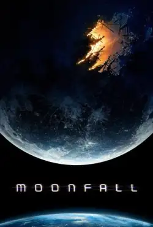

Lista de filmes

Cavaleiro da lua - 1º temporda
SINOPSE: Em Cavaleiro da Lua, durante um trabalho sujo, o mercenário Marc Spector (Oscar Isaac) sofre um acidente e acaba sendo abandonado por seus comparsas, ficando à beira da morte. Ele é, então, resgatado e levado para um templo egípcio, onde o deus da lua, Khonshu, lhe oferece uma segunda chance de viver em troca do seu corpo como hospedeiro. Ele sofre de transtorno de identidade dissociativa e, quando acorda, acredita ser Steven Grant, uma de suas várias personalidades alternativas...

Halo 1º temporda
SINOPSE: Em Halo, uma épica batalha acontece no durante o século XXVI entre a raça humana e uma espécie alienígena conhecida como Covenant. Após anos de domínio, quando colônias começam a se rebelar, a liderança da raça Covenant declara que humanos são hereges perante seus deuses e inicia uma onda genocida contra a raça humana.
- 
Moonfall – Ameaça Lunar
SINOPSE: Em Moonfall, por motivos desconhecidos, a Lua sai de sua órbita e passa a se deslocar em direção à Terra, podendo causar uma colisão em breve. A ex-astrounauta da NASA, Jo Fowler (Halle Berry), acha que pode resolver essa situação e impedir que o impacto aconteça, mas apenas um de seus colegas (Patrick Wilson) acredita nela. Em situação de emergência, um grupo de cientistas não especializados no assunto aceita a missão de ir até a Lua e impedir a colisão antes que a vida humana seja extinta. Mas ao chegarem lá, eles percebem que a Lua não é exatamente a pedra gigante orbitando a Terra que acharam que era.
-
Bolha
SINOPSE: O elenco e a equipe de um filme de ação de sucesso quebram as regras durante a quarentena em um hotel de luxo para filmar uma sequência da produção.